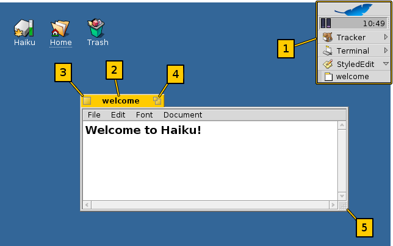
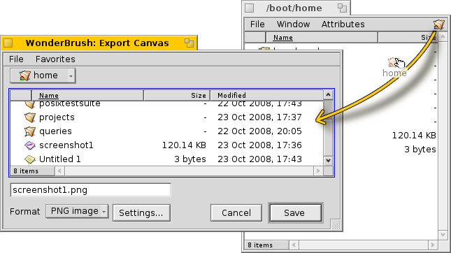
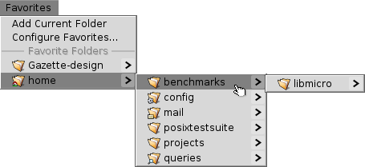

Графичиский инерфейс Haiku - неотъемлимая часть системы. В отличии от Unix-подобных ОС, в Haiku нет отдельного менеджера окон и загрузка в командную оболочку невозмоожна. Haiku ориентирована на домашнего пользователя, так что в этом просто нет необходимости.
Так как у вас, возможно, есть опыт работы с другими графическими окуржениями, давайте порпустим стандартные элементы, такие как меню, контекстное меню по правой кнопке, drag&drop и т.д. Давайте лучше рассмотрим несколько уникальных аспектов графического интерфейса Haiku.
Существует только несколько необычных элементов в графическом инерфейсе Haiku заслуживающих пояснений.
[1] Deskbar - это меню "Start" Haiku, а также панель задача, если угодно. Смотри раздел Deskbar.
[2] Жёлтая панелька предлагает - это не только название программы или имя файла документа:
- Вы можете двигать их, удерживая клавишу SHIFT в момент перетаскивания, позволяет вам размещать несколько окон так, чтобы к ним можно было легко получить досуп при помощи их именованных панелек.
- Минимизация окна происходит при двойном щелчке на его заголовке. Такие скрытые окна могут быть доступны по соответсвующему элементу в Deskbar или в Twitcher.
- Вы можете отправить окно на задний фон правым щелчком на его заголовке (или на его границе).
[4] Кнопка "альтернативного размера" (распахивает окно на полный экран в большинстве приложений).
[4] The "alternative size" button (expands window to full screen in most applications).
[5] Кнопка изменения размера. Перетаскивание в другое место на границе окна будет перемещать окно.
Диалог открытия и сохранения
При открытии или сохранении файла из какого-либо приложения, открывается диалог, похожий на этот:
Он имеет обычное назначений: Списко файлов текущего каталог,а из которых надо выбрать, в случае диалога сохранения, текстовое поле для ввода имени файла и выпадающий спсиок для выбора различных форматов и их настроек.
Вы можете выйти в родительский каталог при помощи выпадающего меню над списком файлов.
Если у вас уже открыто окно Tracker с местонахождением для открытия файла, вы можете просто перетащить любой файл или представление каталога (т.е. значок в дальнем правом углу меню) в каталоге. Это перемещает диалог в новое месторасположение.
Клавиатурные ярлыки
Вы можете исользовать многие из ярлыков также используемых в Tracker. Помимо комманд, которые доступны также через меню File, есть ещё несколько не таких очевидных:
| ALT+N | Создаёт новый каталог. | |
| ALT+E | Позволяет перименовать выбранный элемент. | |
| ALT+СТРЕЛКА-ВВЕРХ | Открывает родительский каталог. | |
| ALT+СТРЕЛКА-ВНИЗ или RETURN | Открывает выбранный каталог. | |
| ALT+D | Перемещает вас на Рабочий стол. | |
| ALT+H | Перемещает вас в Домашний каталог. |
Избранные и недвание каталоги
Меню Favorites предлагает вам недавно посещенные каталоги и избранные месторасположения которые вы можете настроить сами. Как показывает маленькая стрелка, вы можете также ипсользовать эти месторасположения для навигации вниз по иерархии при помощи подменю.
Что бы добавить Избранное, просто перейдите в это расположение и выберитие Favorites | Add Current Folder. С этого момента оно будет доступно в каждом диалоге открытия/сохранения. Для удаления Избранного, выберите Favorites | Configure Favorites... и удалите соответсвующий элемент.
Все Избранные хранятся в /boot/home/config/settings/Tracker/Go/. Так что вы с равным успехом можете добавлять ссылки на файлы и кталоги напрямую.